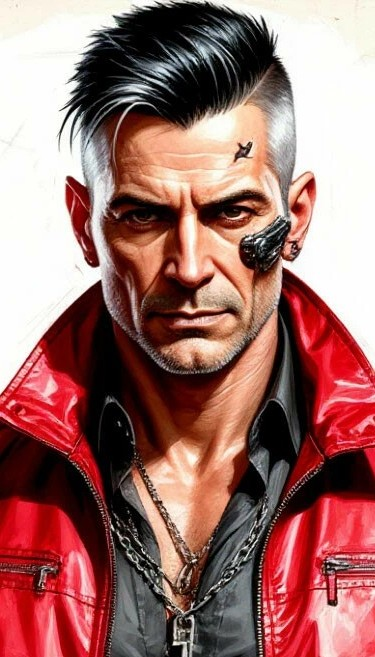
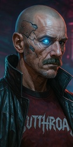

10. 17 мгновений весны
|
DungeonMaster
Valkorolessandra
03.12.2025 00:50 |
Эстеро-бэй. Кладбище Милитеха. 24 февраля 2045 года. Пятница. Раннее утро.
 Смерть в Найт-Сити – дело обычное, а уж для копа так и вовсе естественная. Найти место было несложно – туда стекались люди в одинаковых форменных плащах, одинаково топорщащихся над плечом в том месте, где был приклад. Все они собрались у новенькой плиты с именем Раджа Джагдиша. Получив флешку, лейтенант счел своим долгом передать ее в Сетевой Дозор. У штаба Дозора к тому времени уже образовался стихийный митинг, а точнее, бардак, туда же приехали Вуду, Муданги и Мальстрём, которому, как обычно, больше всех надо было. После нескольких напряженных минут и грозных выкриков, у кого-то предсказуемо сдали нервы и бардак вылился в беспорядочную пальбу. Гранатометы Мальстрёма превратили фасад штаба в руины. Приехали копы, потом приехал Макстак. Бустеров разогнали, но Джагдиш к тому времени уже был мертв. Последний раз ван Бюррен видел его в день смерти, перед дежурным вылетом. Двумя днями ранее. 1-й участок. Глен. 22 февраля 2045 года. Вторник. 7:20. – На, полюбуйся своим уловом, – на лавку раздевалки рядом с полуодетым Датчем хлопнулась тощая папка. – Дальше возиться не рискнули – ткани отравлены. Не сказать, чтоб в нем было много хрома. – Радж хохотнул, – но, судя по тому, что накопали, там и хром-то был не нужен. Анализ ДНК определил японца как Йоцуми Кацимото, убийцу-гастролера из Вегаса. Полиция уже девять месяцев вяло делала вид, что искала его после убийства семьи номадов. Номады искали его отнюдь не вяло, но также безуспешно. Судя по "послужному списку" и методам, Кацимото действительно был психопатом и без всякого хрома. Что ж, за полицией теперь должок. Да и за номадами тоже. Днем раньше. 23 февраля 2045 года. Четверг. Полдень. Над центром города кружили AV. 54-й вещал о том, что Зона Поражения впервые войдет в Лотерею Тел. Из-под завала достали уже шестой труп. Медиа наперебой трындели о причинах повышенного интереса и обвале. Never More точно знала, на чьих минах подорвались желающие взглянуть, а, скорее всего, просто ограбить, лабораторию. 24 февраля 2045 года. Пятница. Обеденное время. Город бурлил, взбалтываясь волнами беспорядков и перекрытых улиц. Накануне ночью в Зоне поражения дело дошло до очень маленькой очень корпоративной войны всех против всех. В пятницу всем, кто подписал договор с Зельдой пришла повестка в суд и это положило начало долгому муторному разбирательству. Видимо, это и есть старость – когда приходишь на перестрелку, а попадаешь на перебранку. На фоне шумихи об открытии Дубля руководство Роклин не рискнуло идти на крайние меры и желало показательно отстоять "свою" собственность, будучи полностью уверенным в победе. Однако, довольно скоро группу пожилых эджраннеров, обвиненных уже в дюжине преступлений, взялся защищать молодой адвокат, передавший суду несколько неожиданных документов, резко изменивших направление дела.  В числе прочего, он предоставил суду и нового свидетеля. Власти города немедленно предложили Кристиану Соверену программу защиты свидетеля, от которой тот решительно отказался, предпочтя мощи муниципального аппарата одного единственного соло. Параллельно делу "Роклин против Never More" было возбуждено дело "Дубль против Роклин", которое медиа немедленно окрестили "Соверены против Роклин". Джакомо, разумеется, отстранили от защиты эджраннеров, но это была уже формальность. Вскоре Роклин потеряла права на собственность и все документы, касающиеся сделки и ее последствий потеряли силу. В том числе и договор Never More с Зельдой. Более того, Never More теперь могла, наконец, потребовать компенсации за незаконное использование своего генетического материала. К сожалению, за давностью лет жалобу отклонили, а потом и Дубль повторно объявили банкротом. Зато стариков, наконец-то, выпустили из тюрьмы. ✦ ✦ ✦ Через два месяца после событий в Кукольном Домике (вторично обретшем дурную славу), практически все нетраннеры, медиа и фиксеры города, включая Андреаса, Хао, Коми и Boris, получили обещанную Джетом рассылку с проектом, сопровождающими документами и паролем к программе переноса. К тому времени уже все крупные корпорации так или иначе занимались разработкой Дунай. О виновниках переполоха, как это часто бывает, совершенно забыли. Через месяц после рассылки из Японии дошли новости о том, что Арасака смогла повторить методику Дубля. Отделение в Найт-сити немедленно предложило мэру построить в городе центр по цифровому переселению. И мэрия согласилась. Заодно согласившись на увеличение присутствия японской корпы на территории города. Но на торжественное открытие строительства приехали какие-то хмурые люди в компании еще более хмурых людей и, представившись Сетевым Дозором, наложили вето на оцифровывание людского сознания. Это породило новую череду разбирательств. Кристиана арестовали и вскоре казнили, объявив это стиранием ИскИна. Милитех пустил слух об удачном эксперименте и начал судиться с Дозором. Медиа метались между офисами, люди толстели от огромного количества попкорна. Вскоре выяснилось, что эксперимент Милитеха на самом деле провалился. Но дело с Дозором они неожиданно выиграли. На этом фоне в топ вырвалась всеми забытая Рейвен Микрокибернетикс, получившая спонсирование из неизвестного и тщательно скрываемого источника. Практически уничтоженная Роклин корпорация перенесла в новое тело пораженную киберпсихозом девушку. Ни следа психопатических или диссоциативных расстройств. Как и предполагал Джет*, разработанная Дублем программа защиты личности от пребывания в состоянии ИскИна успешно противостояла расчеловечиванию. Это положило конец тщетным попыткам правительственных агентов задушить коммерциализацию технологии. Которые особенно лицемерно смотрелись на фоне утекшей из Вашингтона информации о том, что и там действует лаборатория по цифровому переселению. Первыми, кто выиграл на фоне этой шумихи, были банки тел. Все, кто мог выращивать клонированные ткани, уже предложили свои услуги людям, желавшим положить в морозильник свой клон. Все по-прежнему надеялись, что можно будет сделать бэкап. Однако шли месяцы, а это так никому и не удавалось. Как и заставить копию существовать дольше нескольких дней. Надежда на бессмертие рухнула, оставив после себя лишь средство лечения психоза и генетических заболеваний и плановое омоложение. Единственное, чего удалось добиться – переиспользование клонированного тела. Шумиха сошла на нет. Пятая корпоративная откладывалась – воевать пока было не за что. А потом из Вашингтона начала распространяться новая СЕТь. Поддерживаемая отрядами N-SWAT как снаружи, так и из киберпространства, она ширилась по земле, от вышки, к вышке. И после заключения договора с Хайрайдерами, разнеслась по миру спутниками. Атаки так и не побежденного РЭБИДС были отбиты уходившими в двухнедельные забеги нетраннерами, держащими оборону в каждом ключевом узле и в мясе носящими на форме нашивку с золотой монетой. ✦ ✦ ✦ Уцелевшие в этом бардаке, свободные, но обедневшие от судебных издержек, Never More постепенно вернулись к прежней жизни. Ретро допилил, наконец, роликовые коньки и принялся за левитирующую версию. Парочка подхватила идею и надолго застряла в мастерской номада, тестируя имплантированные варианты. Мейсон взял учеников. Троих, правда, вскоре выгнал, но одного оставил. Датч чуть не спился окончательно, будучи на время судебной волокиты отстранен от работы. Глядя в мутные глаза голландца, Саттон предложил ему выкидной гранатомет. Ван Бюррен не смог отказаться и время от времени беловолосые негры заезжали к Джонсону чтобы он отвез их в Пустошь пострелять по бочкам. К Boris'у вернулась (в третий раз) Аманда, что не помешало ему выпустить новый альбом. Хао в очередной раз стала бабушкой и, внезапно начав проводить с семьей гораздо больше времени, взяла отпуск. Кассел наконец-то закончил мемуары. Удивительно, но события последнего года в них не вошли. А, нет, не удивительно. Ведь сразу после публикации его завалили крайне выгодными предложениями о контракте на продолжение, уже с "новейшей историей Never More". Еще до ареста Клод нашел вторую страницу дочери в Гарденс, но все это отошло на второй план, когда он увидел Максим в зале суда на очередном заседании дела Never More. И потом она не пропустила ни одного, каким-то образом оказавшись в помощницах у Джакомо. Когда Мировая Сеть дошла до Найт-сити, Андреас получил целую кучу приглашений сразу от нескольких бурно развивающихся ИТ компаний. А Давыдов получил кучу гневных звонков и писем. Эльза почему-то решила, что Коми сказочно разбогател на всей этой шумихе вокруг Дубля и на каких-то идиотских основаниях требовала денег. И ладо бы себе или сыну, так не – на омоложение Давыдова старшего. Так или иначе… жизнь по-прежнему бурлила и била ключом. Кого-то гаечным, кого-то – по голове. Но все же бурлила. ------------ * По понятным причинам, это не вскрылось в игре. Но Джет мимо такого пройти не мог. В конце концов, его родная специальность ) |
|
Эрвин `Коми` Давыдов
Хэлсэ
03.12.2025 09:18 |
Коми сидел на потёртом десятком величайших музыкальных задниц стуле и доедал привезённый курьером удон. Толстое стекло за микшерным пультом отражало неестественно молодое лицо рокера. Уровни на десятке дорожках прыгали, едва не касаясь красных зон, придавленные гейнами и компрессорами. Процесс шёл.
Рядом, за спиной звукоря, на пластиковом табурете сидел некий Рик Ган, судя по бейджу журналист на ставке Rock&Nigth, не самого популярного издания, но на мастадонтов и не приходилось рассчитывать. Судя по выражению лица звукорежиссёра, знаменитого Рональда Гаррисона, что когда-то записывал самого Мэнсона, ни присутствие медиа, ни качество материала его не устраивали. Как только Boris-у удалось снять эту студию? «Подарок на день рождения», заявил старый рокербой, вручая лакированную визитку MorroRecords. Давыдов в ответ попросил исполнить пару вокальных партий на новом альбоме DITG. Нет, он не собирался прощаться с NCPD, но просто принял решение дать людям того, что им хочется. – Ваше имя стало чаще звучать в таблоидах, однако многие… Эрвин резко поднял руку, ладонью в сторону журналиста, призывая того замолчать. Нет, так дело не пойдёт… – Нестор, – произнёс он имя постоянно лажающего молодого рокербоя, как только вошёл в кабинку для звукозаписи – это – всё – полное – дерьмо. Чернов вздёрнул чёлкой и с вызовом уставился на Коми. – Ты чем тут занят, а? – спросил басиста Давыдов. – Я, блядь, играю наш материал, чум, – видно было, что усталость от записи, подогретая творческим запалом, готова была вырваться в любой момент, – Хули не так? – Ты играешь говно, чум. – Коми сделал паузу, давая прийти музыканту в себя. – ты думаешь, что, освоив базу можно считать себя творцом, но это… – Чё за наезды, чу… – … не так. Ты лупишь наугад и иногда попадаешь в такт, только вот это не тот уровень, на котором начинается хоть что-то, что можно назвать творчеством. – Но ты же… – Ты не владеешь навыком, не понимаешь структуру песни, не хочешь учиться… – Я блядь стараюсь! Бас с грохотом упал на синий ковёр под ногами. – Ты должен уметь, а не стараться, рокербой! – присёк истерику Эрвин, – или закончишь как Чак. Сидевший и наблюдающий за этим гитарист с удивлением уставился на Давыдова. – Ни тебе в обиду, Уолисс. Ты то никогда не был рокербоем. – Тогда к чему ты это? – К тому, что Чернов в отличии от тебя хочет что-то изменить, а не стать менеджером в отделе ценообразования, подобно тебе. – Тебе бы повзрослеть, – уколол в ответ товарища Чак. – А тебе бы проснуться, – взгляд снова уставился на поднимающего гитару басиста. – Нестор, ритм не строится в условных рамках четыре четверти или три четверти, хочешь играть то, что должны услышать, учись пластичности. Практика и теория. Теория и практика. Нудная лекционная и монотонная работа. То, что в NCPD… – У вас есть связи в NCPD? Голос репортёра из-за спины раздался совершенно неожиданно. От резкого удара в наглую морду его спас вовремя подоспевший Уолисс. – А ну блядь съебался отсюда, пока не приобрёл связи в травме! Журналист спешно покинул кабинку. – Чак, – вырывая плечи из рук гитариста, более спокойно заговорил Эрвин. – Давай сегодня запишем вокал к тому материалу что уже есть, а я к завтрашнему дню найду сессионщика. – Эй, чум, так не делается! – запротестовал Нестор. – Нет, чум, это обычная практика. Не всем дано быть Паганини. А если ты против, то покажи, что можешь сделать это лучше, чем приглашённый профи. Десять минут перерыв и пробуем ещё дубль. С этими словами рокербой вышел из кабинки и направился на улицу. Выйдя из подвальчика студии звукозаписи, достал сигарету и с тоской уставился в серое небо. Его время уходило и никакой бодискульпинг не в силах был это исправить. Молодые фанаты не понимали его идей, не принимали образ мысли и творческого посыла, они горели совершенно чуждым ему огнём, искали новые рубежи, методы, шли истоптанными тропами и надеялись прийти к чему-то совершенно иному, совершая одну и ту же ошибку, что совершали тысячи поколений до них. Тем временем верным фанатам уже перевалило за полтинник, и они уже не хотели никакой борьбы, они хотели только бухтеть, о том, как всё должно быть устроено и что раньше было лучше. Каждый уже нашёл себе комфортное место и не собирался его покидать до самой смерти. Ни музыка, ни протест, ни что бы не сдвинуло их с этой инертной позиции. И скоро все они, да и сам Коми вместе с ними, покинут этот мир, не оставив за собой ничего, кроме крохотных отголосков прожитых жизней. Потому Давыдов и решился на эту запись. Последний альбом Танцующих, старый добрый Хардкор Панк, с огромным количеством амажей в сторону групп 20х годов. Ни на что не претендующая, ни к чему не обязывающая… Музыка давно отжившего своё рокербоя. Спасибо всем, кто прошёл этот путь до самого конца, а так же тем, кто задал настроение в начале. Ваши персонажи стали почти живыми людьми, набирая с каждой сценой всё больше и больше характеризующих их черт. Я рад знакомству с каждым из них.
Не передать объём и глубину благодарности Valkorolessandra, сумевший довести нашу шальную компанию до самого финала. Спасибо ей за атмосферные посты, за понимание, поддержку и едва ли ни ежедневную работу над модулем на протяжение почти полугода! Вы только задумайтесь, сколько времени мы пробыли вместе? Теперь этот модуль и все, кто в нём участвовал, благодаря Лессе, стал тёплым воспоминанием, о котором есть что рассказать и всегда приятно вспомнить. Ещё раз, СПАСИБО! |
|
Ральф `Датч` ван Бюрен
JasperCorax
03.12.2025 10:55 |
Датч в тысячный раз в своей жизни переодевался "в гражданку" после очередного вылета. После того как закончилась бумажная волокита, да еще и без реальных сроков для всех участников, разве что небольшая заначка на карте, которая откладывалась "на пенсию", в очередной раз улетела в неизвестном направлении по проводам электронных банков, жизнь начала налаживаться обратно. Старый ветеран даже представить себе не мог, насколько это паршиво, сидеть целыми днями и ждать без своих ребят, без своей "птички". Какой же он без них "Летучий голландец"?
И все же могильная плита Раджа, как раньше Барта, стала еще одним якорем, который тянул в землю и самого ван Бюрена. Не физически, конечно, здоровьем природа его не обделила, и подводило оно пока что не так часто, вписываясь в расходы на военную страховку, которая у него до сих пор была на время службы в МаксТаке, но что-то не давало душе взлететь как в молодости и почувствовать себя живой. Даже синт-водка и прочее пойло. Единственное, что возвращало его в те веселые дни хоть ненадолго, была возобновившаяся концертная деятельность Коми, и на концерты штурмовик ходил так же постоянно как и на кладбище к двум чумбам, выполнившим долг до конца и отдавшими за него жизнь, не сломавшимися под давлением грязного во всех смыслах города. Вот и в этот день, после работы, ван Бюрен взял такси и поехал с новенькой копией альбома к Эрвину: - Здарова, Коми, - белозубая улыбка как обычно выделялась на темной коже, - поставь автограф, а? И я считаю, надо собраться всем в Посмертии по этому поводу. Мне на карту капнуло, пару кругов за мой счет. Огромное спасибо всей команде и особенно Лессе за очень крутой модуль и за то, что взяли меня посередине сюжета =). Очень классная подобралась компания, и я очень рад играть с вами всеми. Отдельное спасибо мастеру за атмосферу и кучу возможности раскрыть персонажа, ты шикарно сгладила углы даже там, где были косяки, в том числе - и составителей правил.
Всем ОГРОМНОЕ СПАСИБО. Рад буду играть с вами всеми еще |
|
Клод `Volk` Бишофф
Haru
04.12.2025 05:51 |
- Босс, ответь уже! - молодой напарник отложил инструменты и уставился в напряженную спину Клода. Медтех понятия не имел, где они того откопали, но на его постоянном присутствии настоивали они категорично. Судя по энтузиазму, которым пылал парень, достали его из совсем уж отчаянной дыры, и теперь он был готов хоть об землю разбиться, лишь бы оправдать предложенный ему шанс вырваться в "люди".
Volk раздраженно глянул на экран агента и смахнул звук. Он все еще не был готов. Слишком многое, считал он, все еще давило на его плечи. И Максим "появилась" не в лучшие для него дни. В другое время он бы просто послал корпу с её судами далеко и надолго - эджраннеру не сложно затеряться в городе от таких корпоративных манёвров. Но сейчас неверморовцы обзавелись жильем, а кто-то и каким-никаким делом, и корпоратам было по чему ударить в ответ за полученные обиды. На фоне этого даже предложение Когтей заиграло новыми красками: пускай массовый продукт далек от того, под чем Клод хотел бы оставлять своё имя, но в то время им стало не до разборчивости. Дальше, похоже, не становилось лучше: полосы света и тьмы сменялись со скоростью неонового стробоскопа и Бишофф даже не пытался угадать, на какой из раз свет не загорится вновь. И вот втягивать во все тяжкие Максим... Этого он не хотел и раньше, надеясь когда-то увидеть её обретшей свою лучшую судьбу. Что уж говорить о происходящем. Но девочка отличалась упрямством и не отставала так просто. Она добралась и до концертов Коми и Boris'а - тогда же, когда на них уже перестал появляться он сам. Ну хотя бы не до их втреч в Посмертии - Клод даже представить не мог, что бы испытал, если бы ей позволили переступить порог. Что же, когда-нибудь он обязательно ответит. Но не сегодня. - Заканчивай там, пациент уже просыпается, - Volk поднял замолчавший агент и включил плеер. Из стоявшей поодаль колонки грохнули громкие ритмы. Всем спасибо! Приятно пройти такую историю бок о бок до конца.
|
Спасибо Мастикоре за боевую суку – резкую, убийственную и женственную до последнего патрона.
Спасибо Дыму за угар и трогательность настоящего бродяги.
Спасибо Ясперу за атмосферу безнадёги, хаос и умение зреть в корень.
Спасибо Хару за внимательность, пинки, виртуозную игру и невъ… охрененный мрачный образ.
Спасибо Томми за внимательность и человечность в море бесчеловечности.
Спасибо Хэлсэ за нерв, биполярку и не сбавляющий оборотов локомотив, который протащил на себе весь модуль.
С вами было интересно, с вами было сложно, напряженно и неожиданно. У меня взорвались мозги, я накосячила 100500 раз, но это был аццкий драйв.
Never More forever!